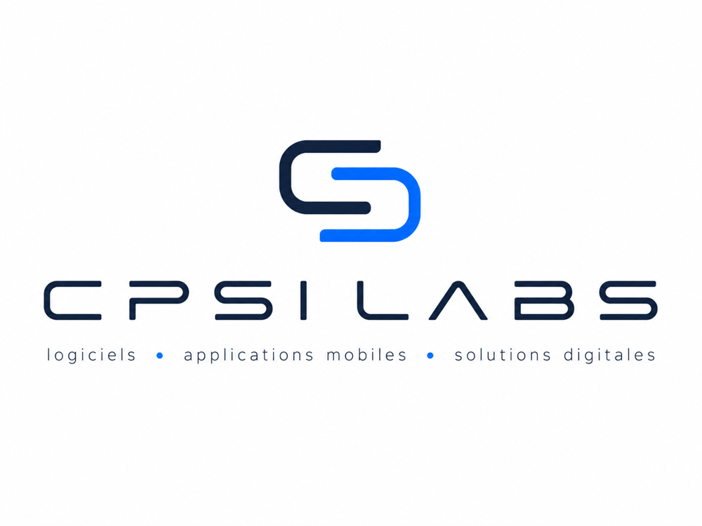

Les premières applications arrivent.
Aucune application n'est encore annoncée sur ce catalogue. Les liens de téléchargement seront ajoutés après publication d'une version officielle.
Des applications, des outils réseaux et des logiciels pensés pour résoudre des problèmes concrets.

Versions officielles, documentation et téléchargements depuis GitHub Releases.
Aucune application n'est encore annoncée sur ce catalogue. Les liens de téléchargement seront ajoutés après publication d'une version officielle.
Téléchargez le fichier correspondant à votre système depuis la page Releases du projet. Consultez ses prérequis et son guide avant l'installation.
Consultez les notes de version et les instructions propres à chaque application. Utilisez uniquement les canaux de distribution officiels.
Signalez un problème dans les Issues du dépôt concerné, si elles sont activées. N'incluez jamais de mots de passe, de jetons ou de données personnelles.
Le prix et les droits d'utilisation seront indiqués pour chaque application. Gratuit ne signifie pas nécessairement open source.
Si un fichier SHA256SUMS est fourni avec la version, comparez son empreinte à celle du fichier téléchargé. Si une signature est fournie, vérifiez-la avec la clé publique officielle et contrôlez son empreinte par un canal fiable.
sha256sum -c SHA256SUMSUtilisez le canal de signalement privé du dépôt concerné s'il est activé, ou suivez son fichier SECURITY.md. Ne publiez pas de détails exploitables dans une issue publique.
La licence du dépôt définit les droits d'utilisation, de modification et de redistribution. Consultez le fichier LICENSE.
Les fichiers peuvent être distribués sans code source. Les conditions propres à chaque logiciel définissent les droits accordés.
Les signatures, empreintes SHA-256 et modalités de vérification seront indiquées pour chaque version lorsqu'elles sont disponibles.
Ce site ne propose ni paiement ni compte utilisateur et n'intègre pas de traceur applicatif. GitHub, en tant qu'hébergeur, peut traiter des données techniques de visite. Confidentialité GitHub ↗